요구사항을 글로 입력하면 도메인 주도 설계(DDD)와 인수 조건으로 구체화하고, 프로젝트 설계 원칙에 따라 구현 계획을 작성합니다. 이 PC의 Claude Code가 격리된 작업 공간에서 구현하고, 검증을 거쳐 승인한 변경은 코드와 설계 그래프에 함께 반영합니다.
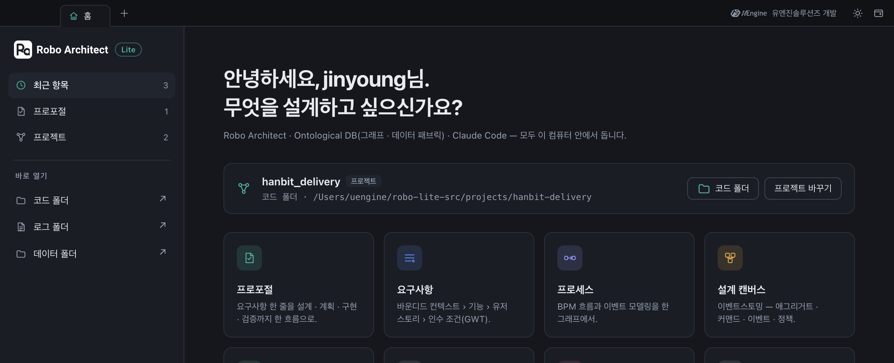
3–15쪽
배경 · 정의 · 산출물 · 특장점
16–17쪽
실행 환경 · 기술 스택 · 스킬
18–19쪽
실제 제품 화면 · 6단계
20–24쪽
보안 · 설치 · 실적 · 일정
AI가 코드를 빠르게 작성하더라도 전체 개발 시간이 줄어드는 것은 아닙니다. 생성된 코드를 검토하고 수정하는 시간까지 고려해야 합니다. 요구사항과 업무 맥락, 검증 기준을 명확히 전달하는 것이 AI 활용의 출발점입니다.
출처: METR, 2025년 무작위 대조 실험. 당시 도구와 참여자의 작업 환경에서 측정한 결과입니다.
AI가 조직의 업무 규칙과 용어를 이해하려면 관련 정보를 제공해야 합니다. 이 정보가 정리되어 있지 않으면 담당자가 대화마다 다시 설명해야 하고, 누락된 내용은 잘못된 구현으로 이어질 수 있습니다.
코드가 빠르게 생성되어도 요구사항에 맞는지 확인하는 과정은 필요합니다. 검증 기준이 불명확하면 담당자의 판단에 의존하게 되고, 검토와 수정에 드는 시간이 늘어납니다.
숙련 개발자는 업무 지식을 바탕으로 기획서의 누락된 내용을 확인합니다. AI에 같은 맥락이 제공되지 않으면 의도와 다른 결과가 나올 수 있으므로, 구현 전에 요구사항을 구체화해야 합니다.
설계 결정과 그 근거가 대화 기록에만 남으면 다음 작업에서 찾고 활용하기 어렵습니다. 담당자가 바뀌어도 이어서 사용할 수 있도록 요구사항과 함께 관리해야 합니다.
Robo Architect는 세 가지 방법론을 연결합니다. 명세 주도 개발(SDD)로 요구사항을 정의하고, 행동 주도 개발(BDD)로 기대 동작을 구체화하며, 도메인 주도 설계(DDD)로 업무 영역과 용어의 경계를 정합니다.
목적과 요구사항을 문서로 정리한 뒤, 구현 계획과 작업 목록을 작성합니다. AI와 개발자가 같은 명세를 기준으로 작업할 수 있도록 합니다.
“잔액이 100원일 때 20원을 인출하면 잔액은 80원이 된다”처럼 조건, 행동, 결과를 구체적으로 적습니다. 이 시나리오를 검증 기준으로 사용합니다.
업무 개념과 규칙을 기준으로 도메인의 경계를 정합니다. 각 영역에서 사용하는 용어와 책임을 명확히 해 AI에 필요한 맥락을 전달합니다.
| 작성 방식 | 예시 — ATM 현금 인출 | 검토 시 확인할 점 |
|---|---|---|
| 사용자 스토리 | “고객은 계좌에서 현금을 인출할 수 있어야 한다” | 잔액 부족 등 예외 상황과 처리 조건을 추가해야 합니다 |
| 요구사항 명세서 | “시스템은 인증된 사용자에게 현금 인출 기능을 제공한다” | 인증 조건과 인출 한도, 실패 시 동작을 구체화해야 합니다 |
| 상세 설계서 | if balance >= amount: balance -= amount |
처리 로직을 표현하지만, 비개발자가 검토하기는 어렵습니다 |
| BDD 시나리오 | Given 잔액 100원 · When 20원 인출 · Then 현금 20원 지급, 잔액 80원 | 업무 담당자와 개발자가 같은 사례로 기대 결과를 확인합니다 |
파일 기반 명세는 팀의 요구사항과 구현 계획을 정리하는 데 유용합니다. 다만 여러 팀과 저장소에 정보가 분산되면 용어를 맞추고 변경의 영향 범위를 파악하기 어려워집니다. 조직 차원에서는 다음 네 가지 문제를 함께 관리해야 합니다.
| 관리 과제 | 발생 원인 | 업무에 미치는 영향 |
|---|---|---|
| 분산된 명세 | 명세 파일이 각 저장소 안에만 존재합니다 | 다른 팀의 구현을 파악하기 어려워 같은 기능을 중복 개발할 수 있습니다 |
| 용어 불일치 | 저장소마다 도메인 용어를 각자 정의합니다 | “수용가”와 “고객”처럼 서로 다른 용어가 같은 대상을 뜻하는지 확인해야 합니다 |
| 영향 범위 파악 | 요구사항 · 설계 · 코드의 관계를 문서 링크로 관리합니다 | 규정이 바뀌면 관련 문서와 코드를 일일이 확인해야 합니다 |
| 설계 지식의 인계 | 업무 지식과 설계 근거가 담당자와 대화 기록에 의존합니다 | 담당자 변경 시 업무 지식이 누락되거나 같은 분석을 반복할 수 있습니다 |
| 비교 항목 | 파일 기반 명세 | 그래프 기반 명세 |
|---|---|---|
| 명세의 위치 | 저장소 안의 마크다운 파일 | 프로젝트마다 하나씩 두는 도메인 그래프 |
| 경계의 기준 | 저장소와 폴더 단위 | Bounded Context 단위의 업무 영역 |
| 용어 일관성 | 저장소마다 각자 기술 | 도메인별 용어와 관계를 함께 관리 |
| 변경 영향 분석 | 파일 검색과 담당자 협의로 확인 | 연결 관계를 따라 영향 범위와 충돌 가능성 분석 |
| 검증 기준 | 문서에 적은 수용 기준 | 설계 요소에 연결된 Given · When · Then 인수 조건 |
| 지식의 축적 | 프로젝트별 파일에 기록 | 설계 요소와 프로포절(변경 제안) 이력으로 연결해 보존 |
Robo Architect Lite는 명세 주도 개발을 위한 데스크톱 AI 아키텍처 워크벤치입니다. 요구사항을 DDD 설계와 인수 조건으로 구체화하고 설계 원칙에 따라 계획을 작성합니다. 구현은 Claude Code가 격리된 작업 공간에서 수행합니다.
추가하거나 변경할 기능을 문장으로 입력하거나 요구사항 문서를 붙여 넣습니다. 기존 코드와 데이터베이스를 연결해 설계 근거로 활용할 수 있습니다.
바운디드 컨텍스트, 기능, 사용자 스토리, 인수 조건으로 구체화합니다. 설계 원칙에 따라 Aggregate · 명령 · 이벤트와 아키텍처를 결정합니다.
전용 브랜치에 구현한 코드와 검증 결과를 제공합니다. 승인하면 대상 브랜치와 프로젝트 그래프에 함께 반영합니다.
| 문서 중심의 설계 관리 | Robo Architect Lite | |
|---|---|---|
| 설계의 형태 | 다이어그램 이미지와 문서 | 질의할 수 있는 프로젝트 그래프(노드 26종 · 관계 32종 정의) |
| 변경 단위 | 티켓과 문서를 따로 관리 | 프로포절 하나에 요구사항 · 계획 · 구현 · 검증 결과를 함께 기록 |
| 설계 기준 | 담당자가 문서로 관리 | 프로젝트 설계 원칙을 계획의 결정마다 근거로 표시 |
| 구현 | 설계와 별도로 진행 | 전용 브랜치의 격리된 작업 공간에서 Claude Code가 구현 |
| 검증 | 리뷰어의 판단에 의존 | 인수 조건과 설계 구조를 근거(파일 · 줄)와 함께 판정 |
| AI 작업 절차 | 사람마다 다른 프롬프트 | 스킬 파일 21종에 절차와 규칙을 정의 |
프로포절의 설계 결과는 프로젝트 그래프에 저장됩니다. 프로젝트 하나가 그래프 DB(Ontological DB) 안의 그래프 하나이므로, 프로젝트를 여러 개 만들어도 설계가 섞이지 않습니다.
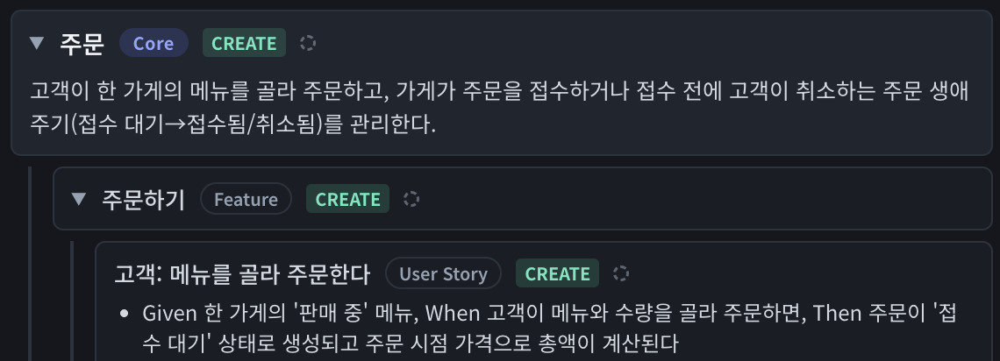
| 계층 | 노드 |
|---|---|
| 요구사항 | Requirement · Feature · UserStory · Given/When/Then(인수 조건) |
| 전략 설계 | BoundedContext(Core · Supporting · Generic 분류) · Policy |
| 전술 설계 | Aggregate · Command · Event · ReadModel · Property · Invariant |
| 화면 · 흐름 | UI · Journey · JourneyStep |
| 변경 · 기준 | Proposal(PRO-NNN) · Constitution(프로젝트 설계 원칙) |
프로포절은 단계마다 산출물을 남깁니다. 나중에 “이 Aggregate는 왜 생겼는가?”를 확인해야 할 때 해당 프로포절을 열어 요구사항, 계획의 근거, 구현 커밋, 검증 결과를 함께 볼 수 있습니다.
| 단계 | 산출물 | 보관 위치 |
|---|---|---|
| INTENT | 전략 설계(프로세스 · 바운디드 컨텍스트 · 기능 · 사용자 스토리 · 인수 조건), Impact Map | 프로포절 |
| 설계 원칙 | Core Principles · Technology Constraints · Architecture · Repository Strategy · Governance로 구성한 Markdown 문서 | 프로젝트 그래프(프로젝트당 1개) |
| PLAN | 전술 설계, 아키텍처 결정과 근거 원칙, 원칙이 정하지 않은 영역, 영향 분석 | 프로포절 |
| 구현 | Phase별 작업 목록, 작업마다 1건씩 기록하는 커밋 | 대상 저장소의proposal/PRO-NNN 브랜치 |
| 검증 | 판정 카드(PASS · FAIL · SKIP)와 근거(파일 · 줄, 통과한 테스트) | 프로포절 |
| ACCEPTED | 병합된 코드, 갱신된 설계 그래프, 상태 변경 이력 | 대상 브랜치 · 프로젝트 그래프 |
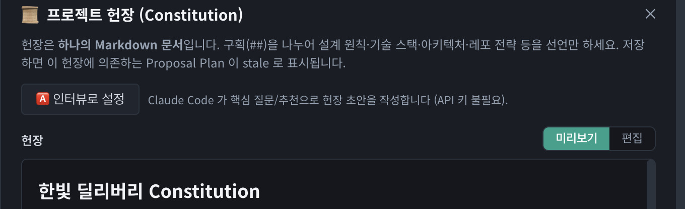
npm test 실행 결과홈의 기능 카드 여덟 개가 각 화면을 탭으로 엽니다. 요구사항 · 프로세스 · 설계 · 데이터 탭은 같은 프로젝트 그래프를 용도에 맞게 보여 줍니다. 아래는 실제 제품 화면이며, 데모 데이터(튜토리얼 실습) 기준입니다.
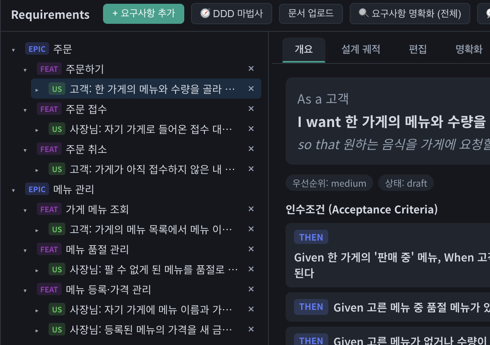
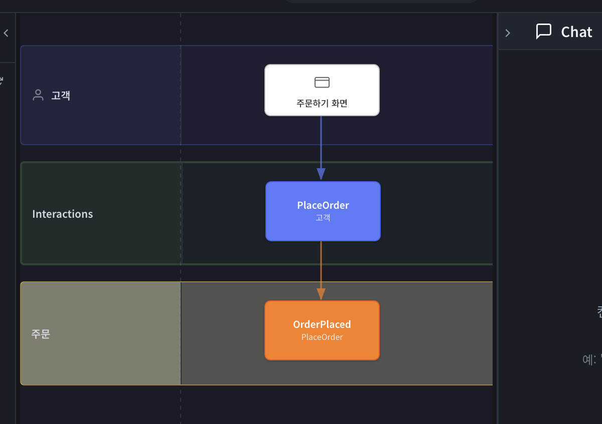
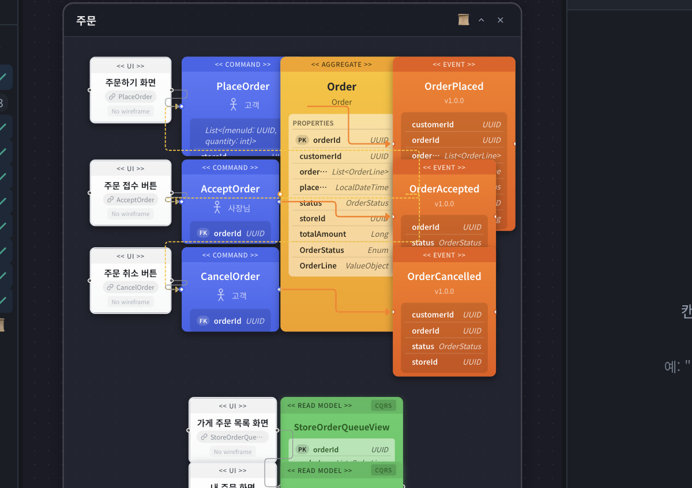
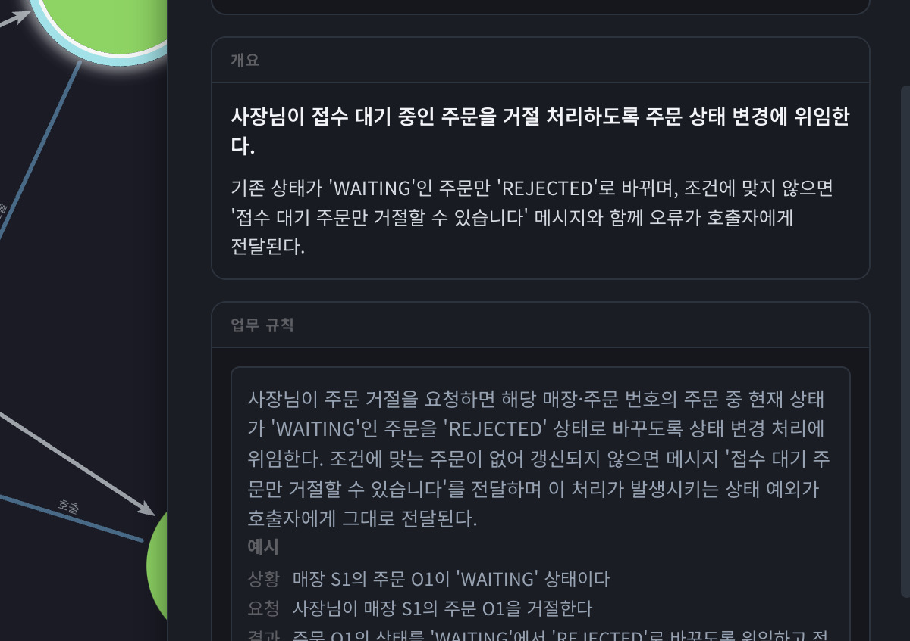
| 카드 | 하는 일 | 카드 | 하는 일 |
|---|---|---|---|
| 프로포절 | 요구사항 → 설계 · 계획 · 구현 · 검증 | 데이터 모델 | Aggregate의 엔티티 · 값 객체 · 열거형 |
| 요구사항 | 컨텍스트 › 기능 › 스토리 › 인수 조건 | 코드 | 코드 폴더의 파일과 Claude Code 터미널 |
| 프로세스 | BPM 흐름과 이벤트 모델링 | 레거시 · 데이터 소스 | 기존 코드 분석, 기존 DB 연결 |
| 설계 캔버스 | 이벤트스토밍 — Aggregate · 명령 · 이벤트 | 프로젝트 헌장 | 프로젝트 설계 원칙 편집 · 인터뷰 |
문장으로 쓴 요구사항에는 예외 상황과 경계 조건이 빠지기 쉽습니다. 사용자가 요구사항을 입력하면 Claude Code가 INTENT 스킬에 따라 프로세스 · 바운디드 컨텍스트 · 기능 · 사용자 스토리 · 인수 조건으로 구체화합니다. 사용자는 문장에 없던 경계 상황까지 인수 조건으로 확인할 수 있습니다.
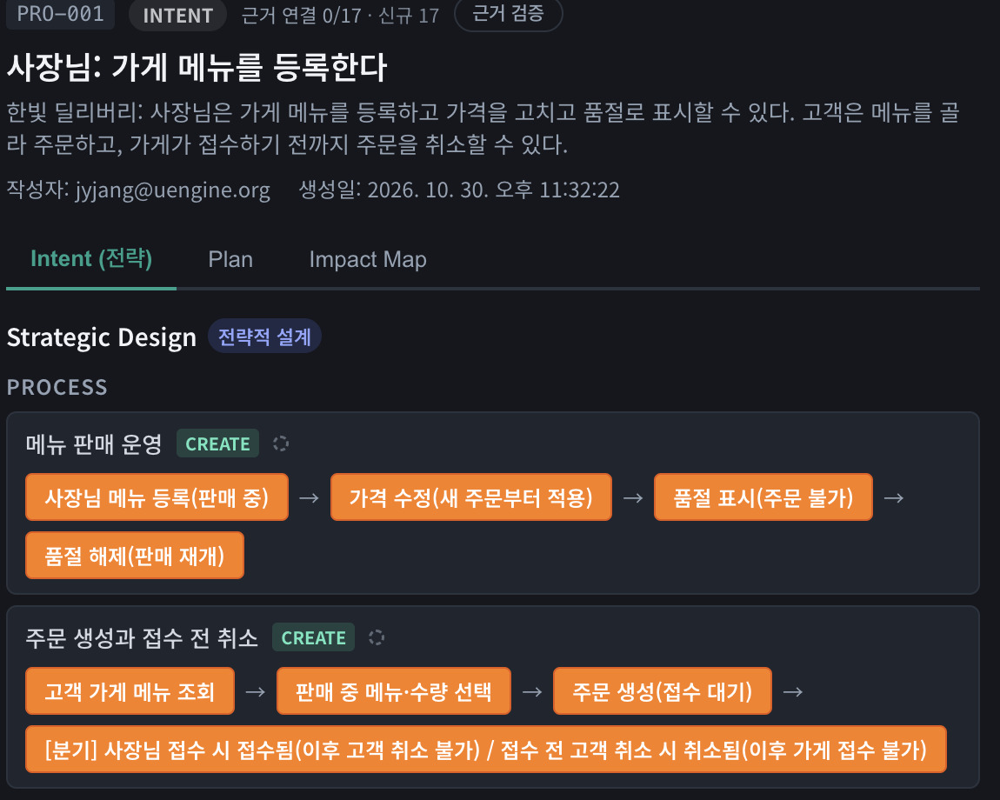
| 결과(132초) | 내용 |
|---|---|
| 프로세스 2개 | 메뉴 판매 운영 · 주문 생성과 접수 전 취소 |
| 컨텍스트 2개 | 주문(Core) · 메뉴 관리(Supporting) |
| 기능 6개 | 메뉴 등록 · 가격 관리, 품절 관리, 주문하기 등 |
| 스토리 7개 | 사장님 4개 · 고객 3개, 스토리마다 인수 조건 |
| 방식 | 진행 방법 |
|---|---|
| 간소화 | INTENT → PLAN 두 단계. 영향 범위가 작은 변경에 적합합니다 |
| 상세 DDD | Discover → Decompose → … → Tactical 6단계를 하나씩 확정합니다 |
| ODA 표준 | TM Forum ODA 표준을 근거로 설계하고 적합성을 점검합니다 |
같은 기능도 기술 스택과 아키텍처 스타일에 따라 구현 계획이 달라집니다. 이런 결정을 프로포절마다 새로 하면 프로포절끼리 서로 다른 구조를 만들게 됩니다. Robo Architect는 프로젝트마다 설계 원칙 문서(Constitution)를 하나 두고, 모든 계획이 이 원칙을 따르도록 합니다.
| 질문 | 추천 근거 | 선택한 답 |
|---|---|---|
| 아키텍처 스타일 | 바운디드 컨텍스트가 적고 단순해 단일 배포가 간단합니다 | MONOLITH(추천) |
| 기술 스택 | DDD Aggregate와 트랜잭션 일관성에 적합한 스택을 추천합니다 | 직접 입력: Node.js(Express) · React · SQLite |
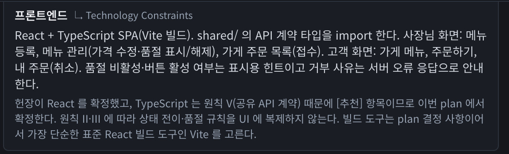
| 결정 | 내용 | 근거 원칙 |
|---|---|---|
| 배포 환경 | Node.js 프로세스 1개, SQLite 단일 파일 DB, React 빌드를 같은 앱이 제공 | Architecture |
| 데이터 접근 | 모듈별 저장소 계층, 접수 · 취소는 상태 조건부 갱신으로 하나만 성공 | II · Technology Constraints |
| 테스트 전략 | 도메인 불변식 단위 테스트와 API 통합 테스트 | VI |
AI가 작성한 코드가 기존 코드에 바로 섞이면 검토 범위를 정하기 어렵습니다. Robo Architect는 프로포절마다 전용 브랜치(proposal/PRO-001)의 Git 워크트리(같은 저장소의 별도 작업 폴더)를 만들고 그 안에서만 구현합니다. 대상 브랜치는 최종 승인 전까지 변경되지 않습니다.
/robo-implement PRO-001로 작업을 하나씩 수행하고, 작업을 마칠 때마다 체크 표시와 커밋을 남깁니다.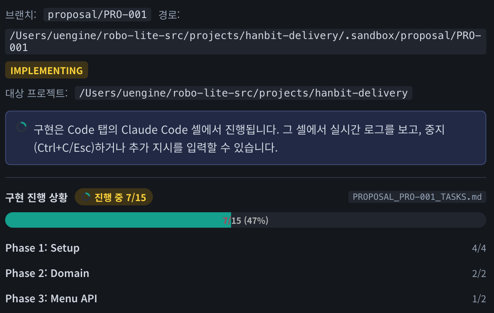
| Phase | 작업 |
|---|---|
| 1 Setup | 저장소 구성, Express · SQLite 기반, 인증, API 계약 |
| 2 Domain | Menu · Order Aggregate와 불변식 |
| 3 Menu API | 메뉴 저장, 공개 인터페이스, 라우트 |
| 4 Ordering API | 주문 생성 · 접수 · 취소 |
| 5 Frontend | 사장님 화면 · 고객 화면 |
| 6 Test | 불변식 테스트 · API 통합 테스트 |
backend/src/modules/menu · ordering · backend/migrations · frontend/src/pages/owner · customer · shared/src작업 목록을 모두 완료했다고 해서 설계대로 구현됐다고 볼 수는 없습니다. 검증 단계는 두 가지를 확인합니다. 구조 검증은 전술 설계의 Aggregate · 필드 · 명령 · 이벤트가 코드에 있는지 robo-sync 추출기로 대조합니다. 인수 조건 검증은 Given · When · Then마다 코드와 테스트를 확인하고 근거를 붙입니다.
| 구분 | 건수 | PASS | FAIL | SKIP |
|---|---|---|---|---|
| 인수 조건 | 18 | 18 | 0 | 0 |
| 구조 검증 | 31 | 26 | 0 | 5 |
| 합계 | 49 | 44 | 0 | 5 (통과율 90%) |
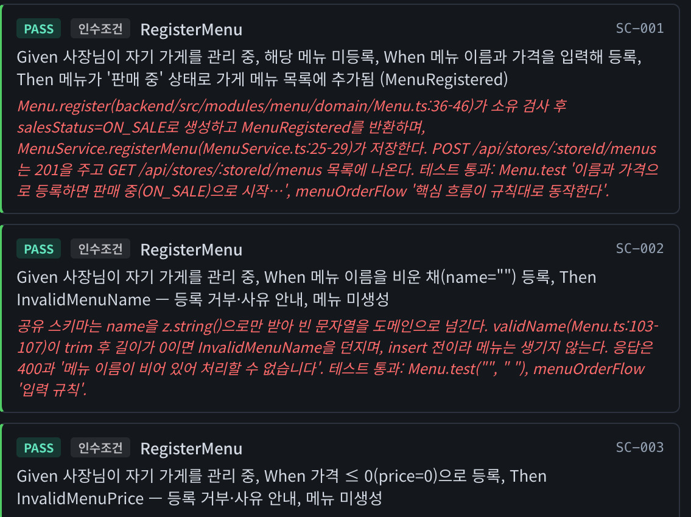
SKIP은 자동 대조를 하지 못한 항목입니다. 이번 SKIP 5건은 명령이 별도 타입 없이 서비스 메서드 인자로만 표현되어 추출기가 입력 필드를 읽지 못한 경우였습니다. 통과율은 SKIP을 포함한 전체 건수로 계산합니다.
FAIL이 있으면 확인 절차를 거칩니다. 「실패 항목을 인지하고 Accept를 진행합니다」를 선택해야 승인할 수 있으며, 그 기록이 남습니다.
| 작업 | 처리 내용 |
|---|---|
| Accept (Dual Merge) | 전용 브랜치를 대상 브랜치에 병합하고, 전략 · 전술 설계를 프로젝트 그래프에 반영합니다. 그래프 반영이 실패하면 코드 병합을 되돌리고 실패 상태로 표시합니다 |
| 수거(되돌리기) | 「그래프만 되돌리기」 또는 「그래프 + 코드 되돌리기」(병합 커밋 git revert)를 선택합니다 |
| Destroy | 승인하지 않고 폐기합니다. 격리된 작업 공간을 정리하고, 프로포절의 변경 이력은 보관합니다 |
실제 개발은 대부분 기존 설계를 수정하는 일입니다. 승인된 설계가 있는 프로젝트에서 새 프로포절을 만들면, Robo Architect는 새로 만드는 요소(CREATE)와 기존 요소를 수정하는 요소(MODIFY)를 구분합니다. 이미 구현된 요소를 수정하는 경우에는 충돌 가능성을 함께 표시합니다.
두 번째 프로포절 PRO-002에 “사장님은 주문을 거절할 때 사유를 하나 고르고, 고객은 그 사유를 본다”를 입력했습니다. INTENT 분석(80초)에서는 새 바운디드 컨텍스트 없이 기존 「주문」 컨텍스트에 기능 두 개가 추가됐습니다. Plan 생성(약 6분)에서는 PRO-001에서 확정한 결정(데이터 접근 방식, 테스트 도구, 폴더 구성)을 그대로 이어받았습니다.
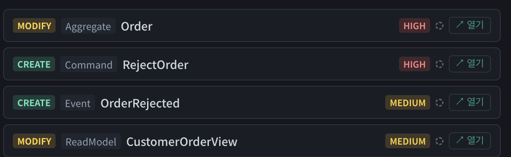
| 연산 | 요소 | 충돌 가능성 | 변경 내용 |
|---|---|---|---|
| MODIFY | Aggregate Order | HIGH | 상태에 REJECTED 추가, 거절 사유 열거형 · 속성, 불변식 2개 |
| CREATE | Command RejectOrder | NONE | 사유를 받아 주문 거절 |
| CREATE | Event OrderRejected | NONE | 주문 거절됨 |
| MODIFY | ReadModel CustomerOrderView | NONE | 고객 주문 조회에 거절 사유 추가 |
기존 시스템의 업무 규칙은 문서보다 코드에 정확히 남아 있는 경우가 많습니다. Robo Architect는 레거시 코드를 분석해 클래스 · 메서드 · 테이블과 업무 규칙을 그래프로 구조화합니다. 새 프로포절을 만들면 요소마다 근거가 된 기존 코드를 연결합니다.
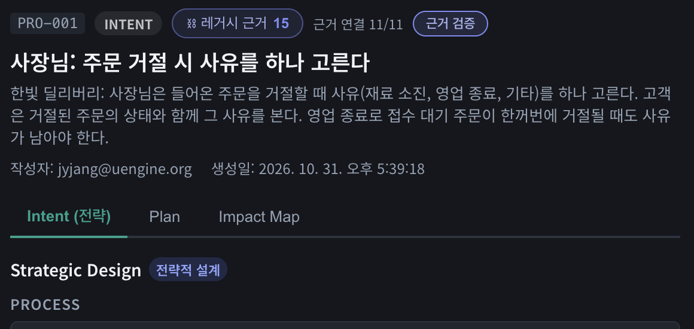
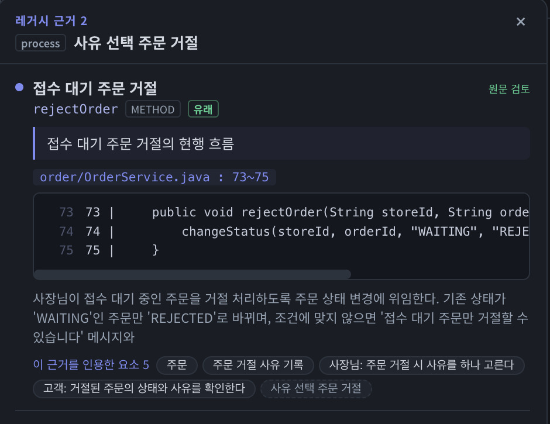
order/OrderService.java : 73~75 원문과 이 근거를 인용한 요소 5개. 데모 데이터(튜토리얼 실습) 기준입니다.| 표시 | 뜻 |
|---|---|
| 유래 · 정제 | 기존 동작에서 나온 요소 / 기존 동작을 수정하는 요소 |
| 원문 검토 | 원문 코드까지 열어 확인한 근거 |
| 검색 확인 | 검색 결과로 확인한 근거 |
| 파일 : 줄 | 근거가 된 원문 위치와 코드 |
| 인용한 요소 | 같은 코드에 기대는 새 요소 목록 |
Robo Architect Lite는 데스크톱 앱, 이 PC에서 실행하는 Architect API, Docker 컨테이너 7개로 구성됩니다. 앱을 실행하면 앱이 컨테이너를 직접 기동하고, 앱을 종료해도 컨테이너를 유지해 다음 실행 시간을 줄입니다. AI 작업은 이 PC의 Claude Code가 수행합니다.
proposal/PRO-NNN 워크트리| 컨테이너 | 구분 | 역할 |
|---|---|---|
| graph-db graph-bolt | Ontological DB | 설계 그래프와 분석 그래프를 저장하며, 프로젝트마다 그래프가 하나씩 생깁니다. graph-bolt는 Bolt 프로토콜 입구로, 상태 없이 질의를 그래프 엔진에 전달합니다 |
| fabric catalog | 데이터 패브릭 | 등록한 기존 DB를 그래프 DB에 연결하고, 테이블 · 컬럼 · 관계 정보를 제공합니다 |
| analyzer parser gateway | 레거시 분석 | 구문 분석(ANTLR)과 코드 의미 · 업무 규칙 분석을 수행합니다. 분석기의 AI 호출은 Architect API를 거쳐 Claude Code가 처리합니다 |
고객사 개발팀이 구조를 이해하고 유지보수할 수 있도록 널리 사용되는 프레임워크와 오픈소스 기술로 구성했습니다. AI의 작업 절차는 제품 코드와 분리해 스킬 파일로 관리합니다.
| 레이어 | 구성 |
|---|---|
| 데스크톱 | Electron 33 · electron-builder 25(Windows NSIS · macOS DMG) · TypeScript |
| 프런트엔드 | Vue 3.5 · Vite 5 · Pinia · Vue Flow(캔버스) · bpmn-js 18 · Mermaid 11 · Tailwind CSS 4 · CodeMirror 6 · xterm.js 6 |
| 백엔드 | Python 3.11 이상 · FastAPI · Uvicorn · Pydantic v2 · SSE(서버 전송 이벤트) · MCP |
| 그래프 DB | Ontological DB — 그래프 엔진과 Bolt 게이트웨이, Cypher 질의 |
| AI 실행 | Claude Code CLI(스킬 실행 · 코드 탭 PTY 셀) · 분석기용 OpenAI 호환 연결 모듈 |
| 분석 서비스 | 레거시 분석기 · ANTLR 구문 분석기 · 데이터 패브릭 · 데이터 카탈로그 · API 게이트웨이 |
| 검증 | pytest · Playwright · ruff |
| 묶음 | 스킬 |
|---|---|
| robo-proposals 15종 | 단계 — intent · project-constitution · plan · tasks · implement · test · context(영향 분석)상세 DDD — scope · discover · decompose · strategize · connect · define · tactical표준 — oda |
| robo-spec 4종 | robo-implement(코드 탭 셀의 구현) · robo-sync(코드 → 설계 구조 대조) · robo-plan · robo-tasks |
| robo-changes 2종 | robo-change-specify · robo-change-tasks(요구사항 변경) |
프로젝트를 열고 프로포절을 작성한 뒤, 설계와 계획을 검토하고 구현 · 검증 · 승인을 진행합니다. 아래는 실제 제품 화면으로 보는 여섯 단계의 사용 절차입니다. 화면은 데모 데이터(튜토리얼 실습) 기준입니다.
홈에서 새 프로젝트 이름(예: hanbit_delivery)을 입력하고 코드 폴더로 사용할 Git 저장소를 선택합니다. 「프로젝트 열기」를 누르면 앱이 이 프로젝트의 그래프로 백엔드를 연결하고 기능 카드를 활성화합니다.
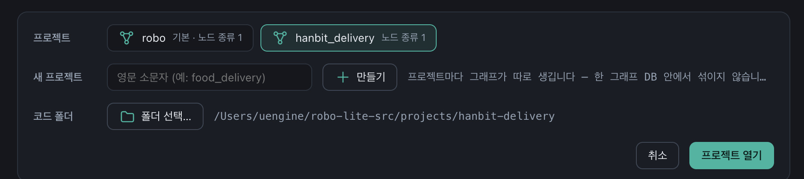
프로포절 탭에서 「＋ 새 Proposal」을 누르고, 추가하거나 변경할 기능을 문장으로 입력합니다. 진행 방식(간소화 · 상세 DDD · ODA 표준)을 선택하고 「AI 분석 시작」을 누릅니다.
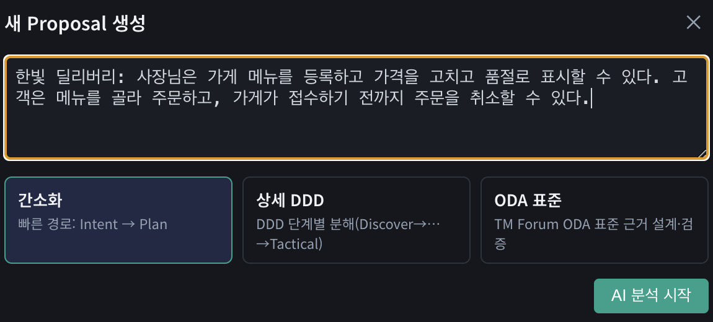
진행 창에 Claude Code의 작업 내용이 표시됩니다. 분석이 끝나면 전략 설계와 Impact Map을 검토하고, 필요하면 피드백을 적어 다시 생성합니다.
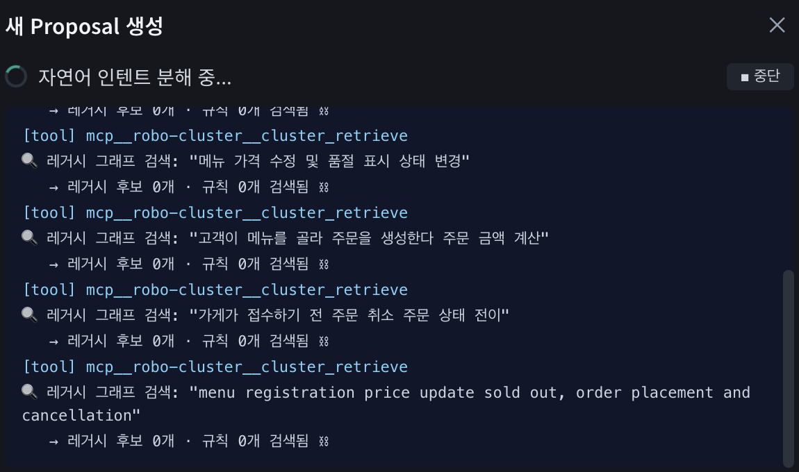
「Plan 단계로 진행」 후 「Plan 생성」을 누릅니다. 설계 원칙이 없는 프로젝트라면 인터뷰가 먼저 열립니다. 생성된 아키텍처 결정과 전술 설계를 검토하고 「Plan 확정」을 누르면 「샌드박스 구현 열기」가 나타납니다.
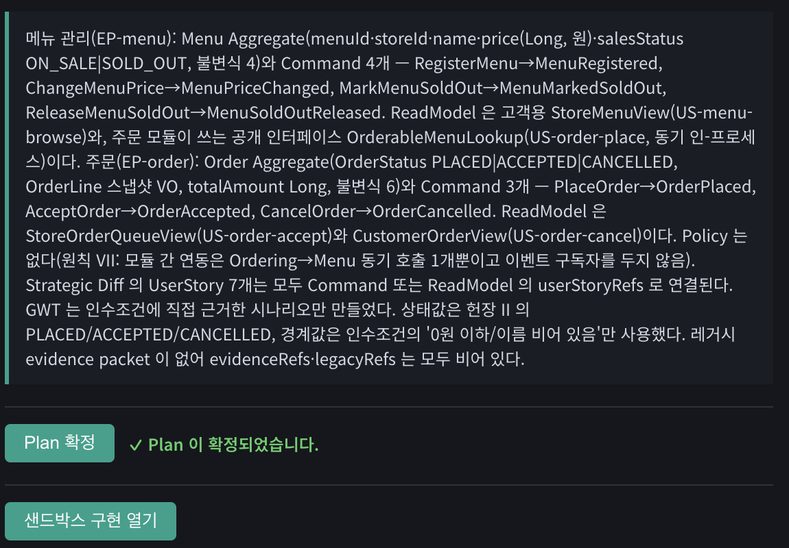
「작업 목록 생성」으로 Phase별 작업을 만들고 「구현하기」를 누릅니다. 「Claude Code 셀로 이동」을 누르면 코드 탭에 프로포절 전용 셀이 열리고 구현이 시작됩니다. 셀에서 파일 작성 · 테스트 · 커밋 과정을 그대로 확인할 수 있습니다.
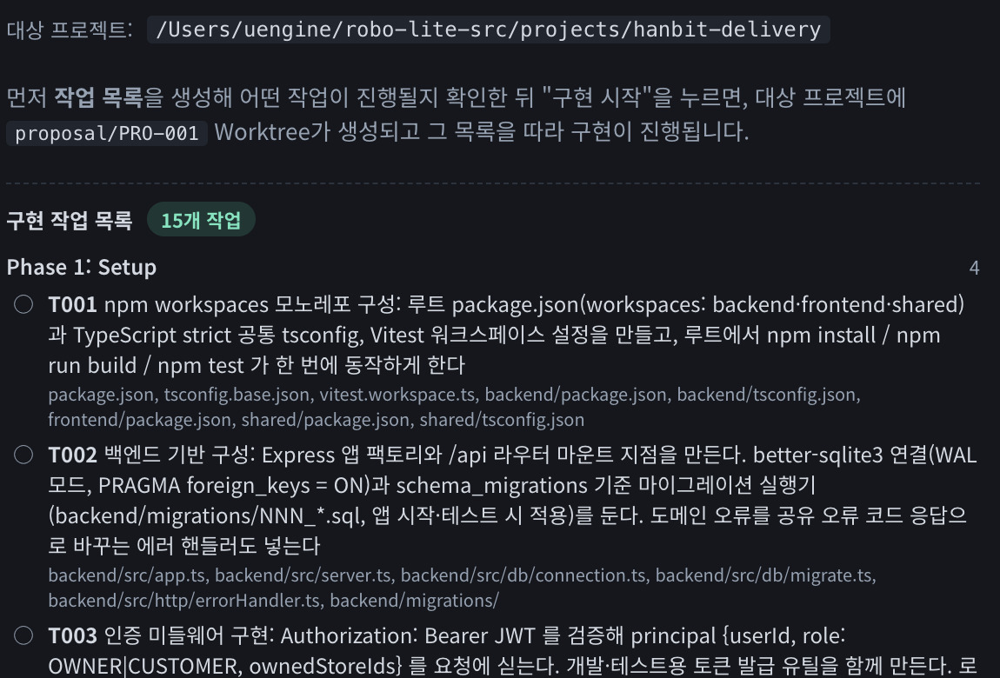
진행이 끝나면 「구현 완료 → 검증」을 누릅니다. 구조 검증과 인수 조건 결과를 확인한 뒤 「Accept (Dual Merge)」를 누르면 코드와 그래프 DB가 함께 갱신되고 상태가 ACCEPTED로 바뀝니다.
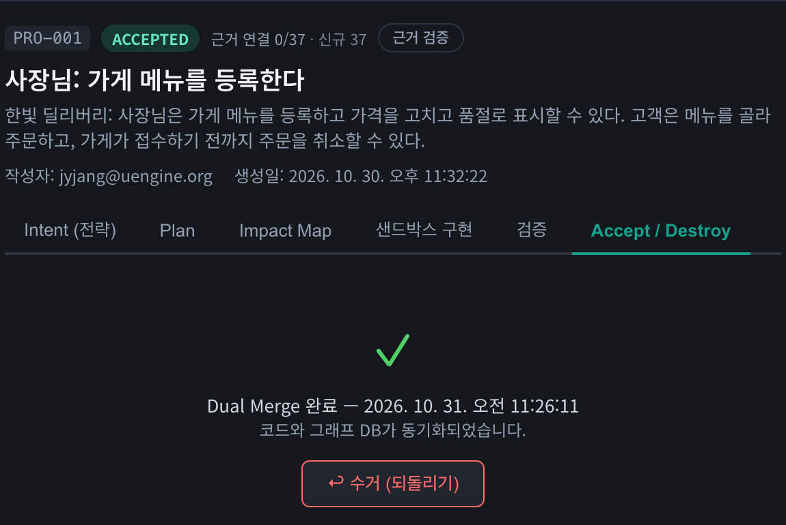
Robo Architect Lite는 사용자 PC에서 실행하는 데스크톱 앱입니다. 도입 전에 데이터 처리 범위와 변경 승인 절차를 아래 기준으로 검토할 수 있습니다.
| 항목 | 내용 |
|---|---|
| 계획 확인 | 최신 설계 원칙으로 확정한 Plan이 있어야 구현을 시작합니다 |
| 코드 격리 | 구현은 전용 브랜치의 워크트리에서만 수행하며, 대상 브랜치는 Accept 전까지 변경되지 않습니다 |
| 충돌 감지 | 같은 설계 요소를 다른 프로포절이 구현 중이면 Plan 단계 제출을 막고 알립니다 |
| 실패 항목 확인 | 검증에 FAIL이 있으면 실패 항목을 인지했다는 확인을 선택해야 Accept할 수 있습니다 |
| 동시 반영 | 그래프 반영이 실패하면 코드 병합을 되돌리고 실패 상태로 표시합니다 |
| 이력 · 로그 | 상태 변경마다 처리자와 시각을 기록하고, 요청마다 추적 번호를 붙여 로그를 남깁니다 |
Robo Architect Lite는 데스크톱 앱 하나와 Docker 컨테이너 7개로 실행됩니다. 앱이 컨테이너 이미지를 적재하고 기동하므로 Python과 데이터베이스를 따로 설치할 필요가 없습니다.
| 구분 | 내용 | 제공 상태 |
|---|---|---|
| Windows 10/11 | 설치 프로그램(약 100MB) · 컨테이너 이미지 묶음(약 1.5GB, 이미지 7개) · 해시 파일(SHA256SUMS). 사용자 단위로 설치하며 관리자 권한이 필요 없습니다 | 요청 시 제공 |
| macOS | Apple Silicon용 데스크톱 앱(DMG) | 설치 파일 배포 준비 중 |
| 첫 실행 | 이미지 묶음의 해시를 확인한 뒤 적재하고 컨테이너 7개를 기동합니다. 튜토리얼 PC에서는 약 50초, 설치본 첫 실행은 이미지 적재 때문에 4~5분이 걸렸습니다 | — |
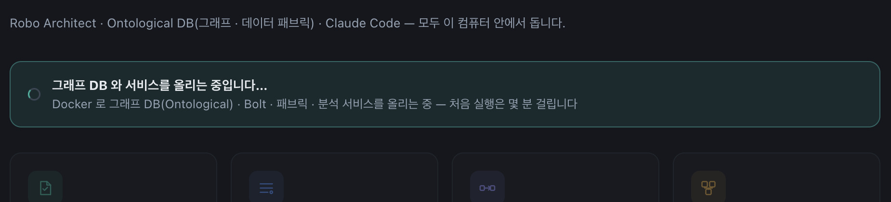
macOS 또는 Windows 10/11, 메모리 16GB 이상, 디스크 여유 공간 20GB 이상을 권장합니다.
그래프 DB와 분석 서비스가 컨테이너로 실행되므로 앱을 쓰는 동안 켜 두어야 합니다.
터미널에서 claude를 실행해 로그인해 둡니다. 프로포절의 분석 · 계획 · 구현에 사용합니다.
코드 폴더는 Git 저장소여야 하며, 프로포절마다 이 저장소의 워크트리를 만듭니다.
Robo Architect 개발팀은 명세 작성부터 구현과 검증까지 일관된 절차를 적용합니다. 기능마다 명세와 계획을 먼저 작성하고, 자동 시험과 실제 앱 실행으로 결과를 확인합니다.
기능은 명세 작성, 구현 계획 수립, 작업 목록 작성, 구현 순서로 개발합니다. 산출물은 저장소에 함께 보관하며, 현재 기능 폴더 59개에 기능 명세 58건, 구현 계획 42건, 작업 목록 39건이 기록되어 있습니다.
회귀 시험(npm run test:regression)은 로직 단위 시험 2개와, 서버 응답을 미리 정한 데이터로 대신해 실행하는 화면 시험 12개로 구성합니다. 정적 분석은 ruff로 수행합니다.
튜토리얼 14개 장의 화면과 결과는 macOS(Apple Silicon)에서 Lite 앱을 실제로 실행해 얻었습니다. 단계별 소요 시간은 다음과 같습니다.
| 단계 | 소요 시간 | 결과 |
|---|---|---|
| INTENT(한 문장) | 132초 | 프로세스 2 · 컨텍스트 2 · 스토리 7 |
| Plan 생성 | 598초 | Aggregate 2개 등 전술 설계 20개 항목 |
| 구현 | 약 22분 | 작업 15개 · 커밋 15건 |
| 검증 ~ 승인 | 약 7분 | 49건 중 PASS 44 · FAIL 0 · SKIP 5 |
| 레거시 분석 | 141초 | 클래스 6 · 메서드 18 · 테이블 7 |
| 변경 프로포절 PRO-002 | 80초 + 395초 | INTENT + Plan, Order MODIFY · 충돌 가능성 HIGH |
| 요구사항 문서 분석 | 171초 | 컨텍스트 5 · 기능 10 · 스토리 17 |
Robo Architect는 이벤트스토밍 기반 설계 · 코드 생성 도구인 MSAEZ(MSA Easy)의 개발 및 운영 경험을 바탕으로 확장한 제품입니다. 다음은 MSAEZ의 산업 현장, 공공 플랫폼, 교육 분야 활용 사례입니다.
MSAEZ는 포스코DX에서 애플리케이션과 마이크로서비스의 설계 및 소스 코드 생성에 사용되고 있습니다. 이벤트스토밍으로 도출한 설계 모델을 바탕으로 코드를 생성하는 데 활용됐습니다.
DPG(디지털플랫폼정부) 통합테스트베드는 한국지능정보사회진흥원(NIA)이 운영하는 플랫폼입니다. 중소기업, 스타트업, 시민 개발자, 공공기관이 민간 · 공공 데이터와 클라우드 자원을 활용해 서비스를 개발 · 시험 · 검증할 수 있도록 지원합니다. 민간의 SaaS를 개발 지원 도구로 제공합니다.
MSA Easy(MSAEZ)는 이 테스트베드에 등록되어 마이크로서비스의 분석 · 설계 · 구현 · 배포 전 과정을 자동화하는 SaaS로 제공되고 있습니다.
MSAEZ는 클라우드 네이티브 개발 교육기관 MSA School의 표준 실습 도구로 사용됩니다. 수강생은 이벤트스토밍으로 도메인을 설계하고, 모델에서 코드를 생성해 배포하는 과정을 실습합니다.
누적 교육 실적은 325회, 수강생 9,655명, 17,864시간입니다. 교육은 기초 · 중급 · 고급의 3단계로 구성되며, Biz(이벤트스토밍 · DDD), Dev(Spring Boot · Kafka), Ops(Kubernetes · GitOps)를 다룹니다.
| 구분 | MSAEZ (기반 제품) | Robo Architect Lite |
|---|---|---|
| 설계 · 구현 | 이벤트스토밍 설계, 모델에서 코드 생성 | 프로포절 단위 DDD 설계, Claude Code 구현 · 검증 |
환경 검토와 PoC(개념 검증)를 거쳐 본 도입까지 4단계로 진행합니다. 아래 일정은 표준 예시이며, 고객사의 환경과 검토 절차에 따라 조정합니다.
Claude Code 사용 계정과 조직 정책, 데이터 처리 범위를 정합니다.
작업할 저장소와 최종 병합 대상 브랜치를 정합니다.
기술 스택, 아키텍처, 저장소 구성의 기준을 정합니다.
조직의 설계 절차와 산출물 양식을 스킬에 반영합니다.
도입 상담, 제품 시연, 견적을 문의해 주세요. 담당 전문가가 영업일 기준 1일 이내에 답변드립니다. 필요하시면 제품 시연 일정도 함께 안내합니다.